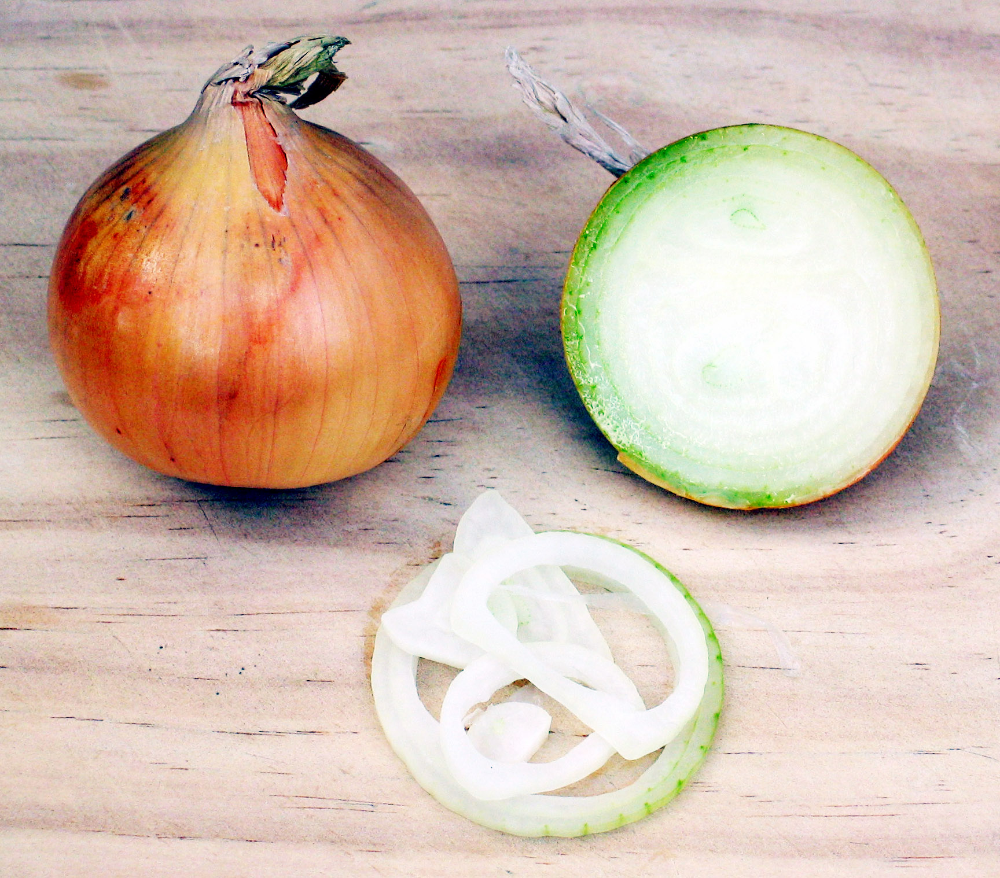

Onion

Common Name: Onion
Genus Species:Allium cepa
Family: Alliaceae
Origin: Himilayas, Siberia
Cultivation:Widely around the world
Description: The onion probably originated in East Asia, but has spread around the world
and has developed numerous varieties, including shallot, chive, and scallion. The name
may come from onion’s “union” or singleness as a bulb. The plant is related to the lily
botanically; chemically it is a less piquant cousin of garlic in taste, but it is unique
in its lachrymatory properties. It is said to be the basis for the name of Chicago,
which comes from an Indian phrase meaning “The place where the wild onion (or garlic)
grows”. Currently, it is the most popular herb, since it is nutritionally satisfying in
addition to being flavorful; people, such as the Hebrews who made their exodus from
Egypt 3000 years ago, have long favored it as a basic food. Homeopaths use a dilute
extract as a treatment for colds, but most other medical systems use it in a
non-specific fashion as a warm, invigorating and satisfying tonic herb. It is sometimes
used topically to treat insect stings, but personal experience suggests it lacks any
significant anti-allergy properties. It has mild anti-microbial qualities and has been
used in wound treatment.
Recipes that Use Onion: